Invention d’une méthodologie automatisée pour la cartographique des temps des déplacements vers la mobilité décarbonée (18/20)
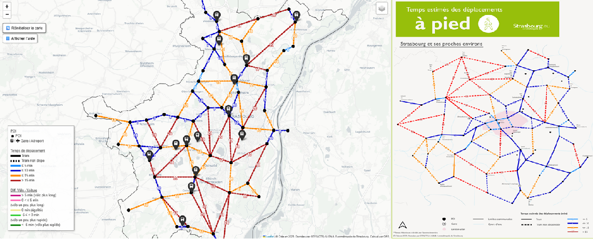
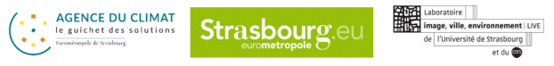
2. Projet en équipe - Article & Carte interactive (2026-1mois) Mots-clés : Cadastre, OCS, Multi-source, Multi-temporelle, Mise à jour automatique, OSO, COSIA, BD TOPO, BD Forêt, RPGMise à jour de l’attribut occupation des sols de la base de données cadastrales : Application au département de l'Aude(17/20)
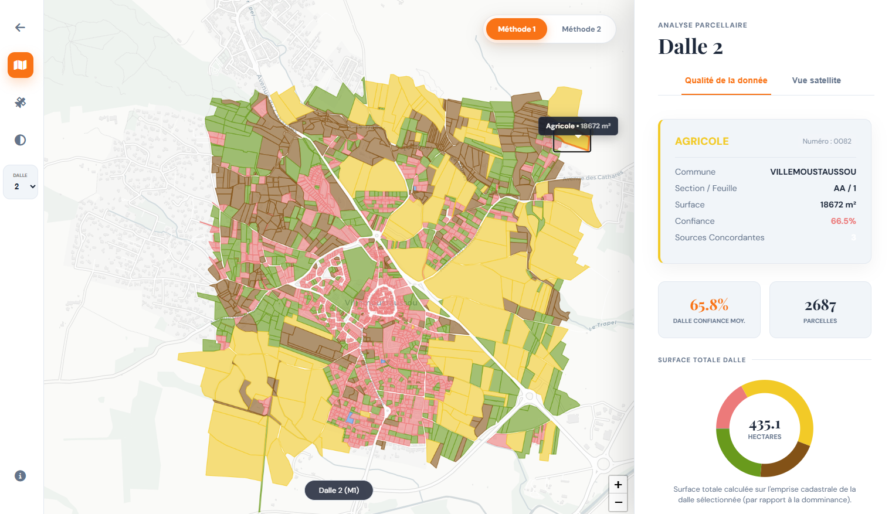
3. Site web d’observatoire territorial (2025) 🗺️ Mots-clés : ArcGIS, PNR, Environnement, Patrimoine, UrbanismeCartographie dynamique (2D/3D/interactive) et representations graphiques sous ArcGIS Online & Analyse territoriale & Infographie du Parc national d'Iriomote-Ishigaki au Japon (17/20)
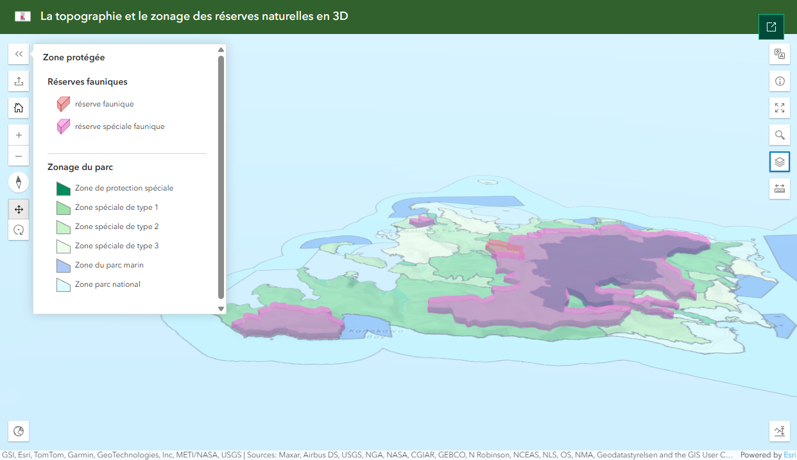
4. Webmapping (2026) 🗺️ Mots-clés : Néclopole, Histoire, Guerre, GoogleStreetViewCartographie interactive HTML pour rechercher les néclopoles d'intérêt et explorer leurs localisations et informations
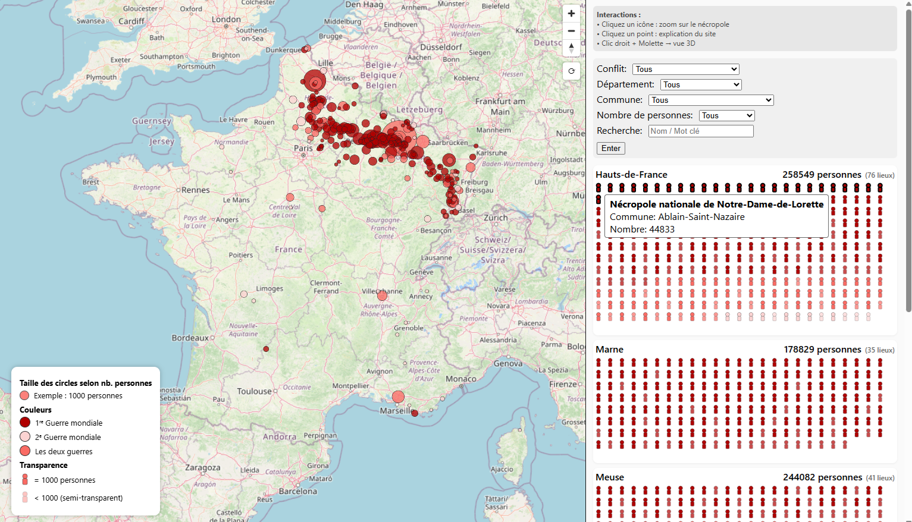
5. Traitements des nuages de points (2025) Mots-clés : Nuages de points, LiDAR, Glissement de terrain, Multi-temporelleAnalyse des nuages de points LiDAR multi-temporelle (2017-2024) et quantification des mouvements de masse : étude du cas au sud du village de Viella dans le département des Pyrénées-Atlantiques (20/20)
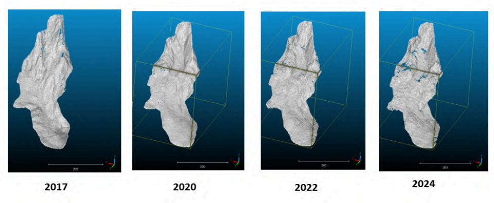
6. Modélisation 3D par photogrammétrie (2025) Mots-clés : Photogrammétrie, Modèle en 3D, MetashapeModèle en 3D d'un bâtiment à partir des photos prises par iPhone et son georéférencement (20/20)
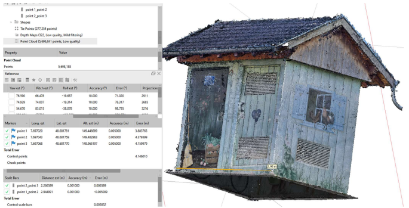
7. Géovisualisation & Datavisualisation & Infographie (2025) 🗺️ Mots-clés : Vieillissement démographique, INSEESite web HTML préseantant le vieillissement démographique en France (17.5/20)
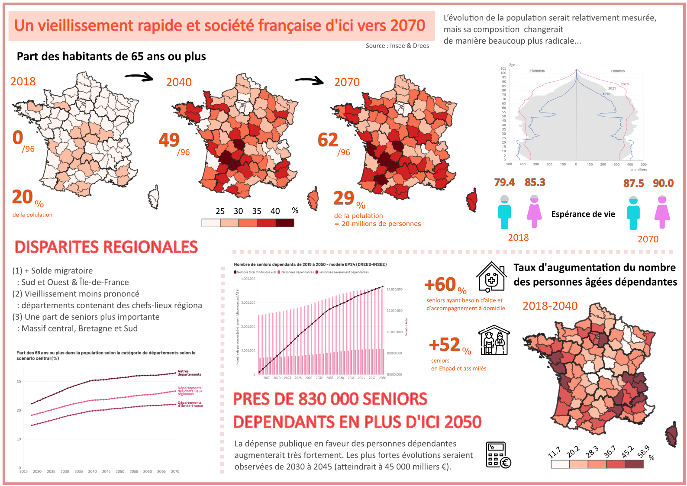
7. Analyse des données des flux quotidiens (2025) Mots-clés : Modèle à quatre étapes, Modèle gravitaire, Modèle logit, Flux domicile-travail, Scénario, INSEE, Part modal, Aménagement du territoireModélisation (17/20) et simulation de scénario (14/20) pour favoriser la mobilité durable à l’horizon 2040 : Etude de cas Toulouse Métropole
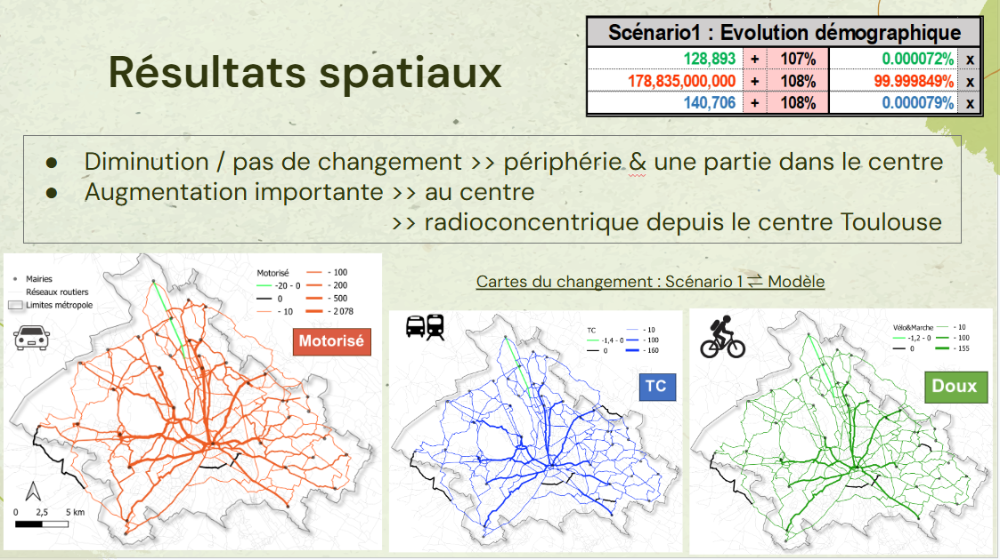
9. Analyse du comportement modal et sa variabilité spatiale (2025) Mots-clés : Comportement modal, Choix modal, Enquête Ménages Déplacements, Aménagement du territoiren, Aide à la décisionArbre de décision en M1(18/20) / Régression géographiquement pondérée (GWR) et Modèle linéaire généralisé (GLM) en M2 (16/20) : Etude de cas Département du Bas-Rhin
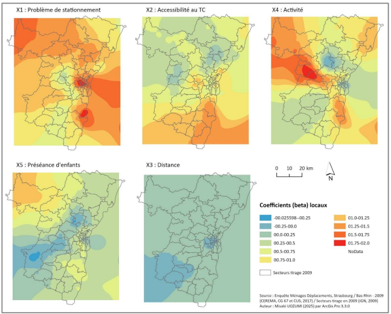
10. Projet en équipe - Rapport & Entretien (2025) Mots-clés : Gouvernance territoriale de l’environnement, Gestion territoriale, Environnement, Eau, ActeursAnalyse de la gouvernance territoriale sur le projet NoCyano : une approche systémique pour lutter contre la prolifération des cyanobactéries dans les étangs de Moselle (16/20)
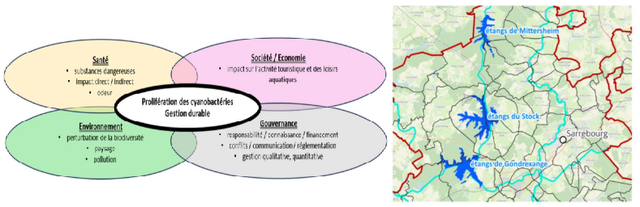